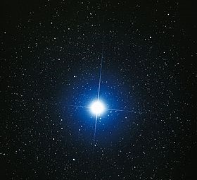
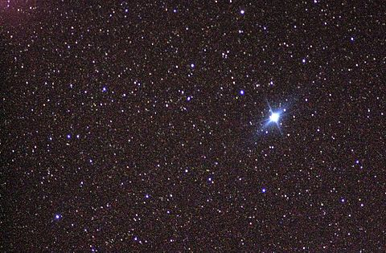
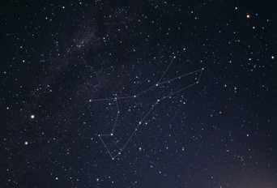

| GWIAZDY I GWIAZDOZBIORY |
| UKŁAD SŁONECZNY |
GWIAZDY I GWIAZDOZBIORY |
| Gwiazda – kuliste ciało niebieskie, stanowiące skupisko powiązanej grawitacyjnie materii. Przynajmniej przez część swojego istnienia emituje w sposób stabilny promieniowanie elektromagnetyczne (w szczególności światło widzialne). Gwiazdy powstają głównie z wodoru i helu, lecz w trakcie życia przybywa w nich atomów cięższych pierwiastków (tzw. metali).Gwiazda powstaje wskutek zapadania grawitacyjnego chmury materii złożonej głównie z wodoru. Gdy jądro gwiazdy osiągnie dostatecznie dużą temperaturę i gęstość, rozpoczyna się reakcja fuzji jądrowej stopniowo zamieniająca wodór w hel. Wytworzona w tym procesie energia jest przenoszona ku powierzchni poprzez promieniowanie oraz drogą konwekcji. Ciśnienie wewnętrzne zapobiega dalszemu zapadaniu się pod wpływem grawitacji. Gdy wodór w jądrze ulegnie wyczerpaniu, dalszy rozwój gwiazdy zależy od jej masy – może zakończyć się np. w stadium białego karła bądź czarnej dziury. Część materii zostanie zwrócona w przestrzeń, gdzie utworzy kolejne pokolenie gwiazd o większej zawartości ciężkich pierwiastków. |
| Najjaśniej
świecącą gwiazdą w pasie Wielkiego psa jest gwiazda SYRIUSZ |
 |
|
Najjaśniej
świecącą gwiazdą w pasie Kila jest gwiazda KANOPUS
|
 |
| Gwiazdozbiór - (konstelacja z łac. constellatio, con od cum 'z [czym]' i stella 'gwiazda') – określony obszar na sferze niebieskiej ustalony przez Międzynarodową Unię Astronomiczną. Gwiazdy wchodzące w skład gwiazdozbiorów nie są ze sobą zazwyczaj fizycznie związane, a ich bliskie położenie na niebie jest wywołane geometrycznym efektem rzutowania ich położeń na sferę niebieską. |
| Wielka
Niedźwiedzica –
gwiazdozbiór okołobiegunowy nieba północnego, a
zarazem
trzecia co do wielkości konstelacja nieba. Liczba gwiazd dostrzegalnych
nieuzbrojonym okiem: około 125. W Polsce jest widoczny przez cały rok. |
|
| Wilk – jedna z konstelacji nieba południowego, W Polsce widoczny częściowo późną jesienią i wczesną zimą. Liczba gwiazd dostrzegalnych nieuzbrojonym okiem: około 70. Większość z nich należy do asocjacji młodych gwiazd OB Skorpiona-Centaura o wieku szacowanym na 16-20 milionów lat. |  |